감정평가사-1차-1교시 (2018-03-03 기출문제)
1과목: 민법(총칙,물권)
1. 부재와 실종에 관한 설명으로 옳지 않은 것은? (다툼이 있으면 판례에 따름)
- 부재자로부터 재산처분권을 위임받은 재산관리인은 그 재산을 처분함에 있어서 법원의 허가를 받을 필요가 없다.
- 제1순위 상속인이 있는 경우에 제2순위 상속인은 실종선고를 청구할 수 있는 이해관계인이 될 수 없다.
- 부재자 재산관리인의 재산처분행위를 허가하는 법원의 결정은 기왕의 처분행위를 추인하는 방법으로도 할 수 있다.
- 실종선고를 받은 자가 실종기간 동안 생존하였다는 사실이 밝혀진 경우, 실종선고의 취소 없이도 이미 개시된 상속을 부정할 수 있다.
- 피상속인의 사망 후 그 상속인에 대한 실종선고가 이루어졌으나 실종기간 만료시점이 피상속인의 사망 이전인 경우, 실종선고된 자는 상속인이 될 수 없다.
(정답률: 알수없음)

2. 16세인 미성년자가 단독으로 유효하게 할 수 없는 법률행위는?
- 유언행위
- 대리행위
- 의무만을 면하는 행위
- 권리만을 얻는 행위
- 법정대리인이 범위를 정하여 처분을 허락한 재산의 처분행위
(정답률: 알수없음)
3. 甲은 취소할 수 없는 법률행위의 범위를 정함이 없이 성년후견개시심판을 받았다. 그 후 甲은 법정대리인 乙의 동의서를 위조하는 방법으로 乙의 동의가 있는 것처럼 믿게 하여 자기 소유 건물을 丙에게 매각하는 계약을 체결하였다. 이에 관한 설명으로 옳지 않은 것을 모두 고른 것은? (다툼이 있으면 판례에 따름)
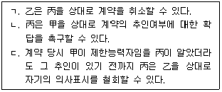
- ㄱ
- ㄷ
- ㄱ, ㄴ
- ㄴ, ㄷ
- ㄱ, ㄴ, ㄷ
(정답률: 알수없음)
4. 정관이 있는 비법인사단에 유추적용할 수 없는 규정은? (다툼이 있으면 판례에 따름)
- 이사의 대표권에 대한 제한은 등기하지 아니하면 제3자에게 대항하지 못한다는 민법 제60조
- 법인은 법률의 규정에 좇아 정관으로 정한 목적의 범위 내에서 권리와 의무의 주체가 된다는 민법 제34조
- 법인은 이사 기타 대표자가 그 직무에 관하여 타인에게 가한 손해를 배상할 책임이 있다는 민법 제35조 제1항
- 사단법인의 사무는 정관으로 이사 또는 기타 임원에게 위임한 사항 외에는 총회의 결의에 의하여야 한다는 민법 제68조
- 이사는 정관 또는 총회의 결의로 금지하지 아니한 사항에 한하여 타인으로 하여금 특정한 행위를 대리하게 할 수 있다는 민법 제62조
(정답률: 알수없음)
5. 법인의 불법행위책임에 관한 설명으로 옳지 않은 것은? (다툼이 있으면 판례에 따름)
- 대표자는 그 명칭이나 직위는 문제되지 않으며, 대표자로 등기되지 않은 자도 이에 포함될 수 있다.
- 대표자의 행위가 직무에 관한 것이 아님을 피해자가 안 경우, 법인은 책임을 지지 않는다.
- 외형상 대표자의 직무행위로 인정되어도 그것이 대표자 개인의 사리를 도모하기 위한 것이면, 직무에 관한 행위에 해당하지 않는다.
- 법인의 책임이 성립하는 경우 특별한 사정이 없는 한, 사원이 그 사항의 총회의결에 찬성했다는 사실만으로 법인과 연대책임을 부담하지는 않는다.
- 법인책임이 대표자의 고의적인 불법행위로 인한 경우에도 피해자에게 과실이 있다면, 법원은 이를 참작하여야 한다.
(정답률: 알수없음)
6. 민법상 법인의 정관에 관한 설명으로 옳은 것은?
- 사단법인의 정관변경은 법원의 허가를 얻지 않으면 그 효력이 없다.
- 사단법인에서 이사의 대표권에 대한 제한은 정관에 기재되지 않더라도 효력이 있다.
- 재단법인 설립자는 정관에 그 존립시기나 해산사유를 기재하고 기명날인하여야 한다.
- 재단법인 설립자가 이사의 임면방법을 정하지 아니하고 사망한 경우, 이해관계인의 청구에 의하여 주무관청이 이를 정한다.
- 재단법인의 재산보전을 위하여 적당한 때에는 정관에 변경방법이 없더라도 명칭 또는 사무소의 소재지를 변경할 수 있다.
(정답률: 알수없음)
7. 과실을 수취할 수 있는 자를 모두 고른 것은?
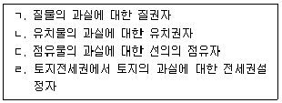
- ㄱ, ㄴ
- ㄷ, ㄹ
- ㄱ, ㄴ, ㄷ
- ㄱ, ㄷ, ㄹ
- ㄴ, ㄷ, ㄹ
(정답률: 알수없음)
8. 불공정한 법률행위에 관한 설명으로 옳지 않은 것은? (다툼이 있으면 판례에 따름)
- 성립요건인 궁박, 경솔, 무경험은 그 중 하나만 갖추어도 충분하다.
- 궁박은 경제적 원인 외에 정신적 또는 심리적 원인에 기인할 수도 있다.
- 대리인에 의하여 행해진 법률행위에서 불공정한 법률행위가 문제되는 경우, 경솔이나 무경험은 대리인을 기준으로 판단한다.
- 무경험은 일반적인 생활체험의 부족을 의미하는 것으로, 어느 특정영역이 아니라 거래 일반에 대한 경험부족을 말한다.
- 매매계약이 약정된 매매대금의 과다로 인하여 불공정한 법률행위에 해당하는 경우, 무효행위의 전환에 관한 민법 제138조가 적용될 수 없다.
(정답률: 알수없음)
9. 진의 아닌 의사표시에 관한 설명으로 옳지 않은 것은? (다툼이 있으면 판례에 따름)
- 사인의 공법행위에는 적용되지 않으므로 공무원의 사직 의사가 외부에 표시된 이상 그 의사는 표시된 대로 효력을 발생한다.
- 진의는 특정한 내용의 의사표시를 하려는 생각을 말하는 것이지 표의자가 진정으로 마음에서 바라는 사항을 뜻하는 것은 아니다.
- 표의자가 강박에 의하여 어쩔 수 없이 증여의 의사표시를 하였다면 이는 비진의 표시에 해당하지 않는다.
- 표의자가 비진의표시임을 이유로 의사표시의 무효를 주장하는 경우, 비진의표시에 해당한다는 사실은 표의자가 증명해야 한다.
- 표의자가 비진의표시임을 이유로 의사표시의 무효를 주장하는 경우, 상대방이 자신의 선의ㆍ무과실을 증명해야 한다.
(정답률: 알수없음)
10. 착오로 인한 의사표시에 관한 설명으로 옳지 않은 것은? (다툼이 있으면 판례에 따름)
- 제3자의 기망으로 표시상의 착오가 발생한 경우, 표의자는 사기를 이유로 의사표시를 취소할 수 있다.
- 착오로 인하여 표의자가 경제적인 불이익을 입지 않았다면, 법률행위 내용의 중요부분의 착오라고 할 수 없다.
- 표의자의 착오를 알고 상대방이 이를 이용한 경우에는 착오가 표의자의 중대한 과실로 발생하여도 취소할 수 있다.
- 당사자의 합의로 착오로 인한 의사표시의 취소에 관한 민법 제109조 제1항의 적용을 배제할 수 있다.
- 동기의 착오를 이유로 의사표시를 취소할 때 그 동기를 의사표시의 내용으로 하는 당사자의 합의까지는 필요 없다.
(정답률: 알수없음)
11. 대리권의 범위에 관한 설명으로 옳지 않은 것은? (다툼이 있으면 판례에 따름)
- 법정대리권의 범위는 법정대리인에 관한 규정에 의하여 결정된다.
- 임의대리권은 통상 그 권한에 부수하여 필요한 한도에서 상대방의 의사표시를 수령하는 대리권을 포함한다.
- 계약체결의 대리권을 수여받은 대리인은 특별한 사정이 없는 한 체결된 계약을 해제할 수 있는 권한을 갖지 않는다.
- 대리권의 범위를 정하지 않은 임의대리인은 대리의 목적인 물건의 성질이 변하지 않는 범위에서 그 이용행위를 할 수 있다.
- 예금계약의 체결을 위임받은 자의 대리권에는 특별한 사정이 없는 한 그 예금을 담보로 대출을 받을 수 있는 권한이 포함되어 있다.
(정답률: 알수없음)
12. 복대리에 관한 설명으로 옳지 않은 것은? (다툼이 있으면 판례에 따름)
- 법정대리인은 자신의 책임으로 복대리인을 선임할 수 있다.
- 임의대리인은 부득이한 사유가 있는 경우, 복대리인을 선임할 수 있다.
- 법정대리인이 부득이한 사유로 복대리인을 선임한 경우, 본인에 대하여 그 선임감독에 관한 책임이 있다.
- 임의대리인이 본인의 승낙을 얻어 복대리인을 선임한 경우, 본인에 대하여 그 선임감독에 관한 책임이 없다.
- 대리인이 대리권 소멸 후 복대리인을 선임하여 그로 하여금 대리행위를 하도록 한 경우, 복대리인의 대리행위에 대하여 표현대리에 관한 규정이 적용될 수 있다.
(정답률: 알수없음)
13. 무권대리와 표현대리에 관한 설명으로 옳은 것은? (다툼이 있으면 판례에 따름)
- 강행법규에 위반한 무효의 대리행위에 대해서도 표현대리의 법리가 적용될 수 있다.
- 무권대리행위의 추인은 본인이 무권대리행위의 상대방뿐만 아니라 무권대리인에 대해서도 할 수 있다.
- 상대방의 유권대리 주장에는 표현대리의 성립 역시 포함되므로 법원은 표현대리의 성립 여부까지 판단해야 한다.
- 무권대리인이 무권대리행위 후 본인을 단독상속한 경우, 그 무권대리행위가 무효임을 주장하는 것은 신의칙에 반하지 않는다.
- 표현대리가 성립하는 경우, 상대방에게 과실이 있으면 과실상계의 법리가 적용된다.
(정답률: 알수없음)
14. 법률행위의 무효에 관한 설명으로 옳지 않은 것은? (다툼이 있으면 판례에 따름)
- 강박의 정도가 극심하여 의사결정을 스스로 할 수 있는 여지가 완전히 박탈된 상태에서 의사표시가 이루어진 경우 그 의사표시는 무효이다.
- 반사회적 법률행위를 원인으로 부동산에 관한 소유권이전등기를 마친 등기명의자가 소유권에 기한 물권적 청구권을 행사하는 경우, 상대방은 법률행위의 무효를 항변으로서 주장할 수 없다.
- 무효인 법률행위를 추인에 의하여 새로운 법률행위로 보기 위해서는 당사자가 이전의 법률행위가 무효임을 알고 그 행위에 대하여 추인하여야 한다.
- 무효인 법률행위가 다른 법률행위의 요건을 구비하고 당사자가 그 무효를 알았더라면 다른 법률행위를 하는 것을 의욕하였으리라고 인정될 때에는 다른 법률행위로서 효력을 가진다.
- 후속행위를 한 것이 묵시적 추인으로 인정되기 위해서는 이전의 법률행위가 무효임을 알거나, 무효임을 의심하면서도 그 행위의 효과를 자기에게 귀속시키도록 하는 의사로 후속행위를 하였음이 인정되어야 한다.
(정답률: 알수없음)
15. 법률행위의 취소에 관한 설명으로 옳지 않은 것은? (다툼이 있으면 판례에 따름)
- 법률행위를 취소한 후라도 무효행위 추인의 요건을 충족할 경우, 무효행위의 추인은 가능하다.
- 제한능력자가 맺은 계약은 추인이 있을 때까지 상대방이 그 의사표시를 취소할 수 있다.
- 제한능력을 이유로 법률행위가 취소된 경우, 제한능력자는 그 행위로 인하여 받은 이익이 현존하는 한도에서 상환할 책임이 있다.
- 법률행위의 취소를 전제로 한 소송상의 이행청구에는 취소의 의사표시가 포함되어 있다고 볼 수 있다.
- 취소권은 추인할 수 있는 날로부터 3년내에 법률행위를 한 날로부터 10년내에 행사하여야 한다.
(정답률: 알수없음)
16. 소멸시효에 관한 설명으로 옳지 않은 것은? (다툼이 있으면 판례에 따름)
- 변제기가 도래한 단기소멸시효채권이 판결에 의해 확정된 경우 그 소멸시효는 5년으로 한다.
- 부작위를 목적으로 하는 채권의 소멸시효는 위반행위를 한 때로부터 진행한다.
- 최고는 6월내에 재판상의 청구, 파산절차참가, 화해를 위한 소환, 임의출석, 압류 또는 가압류, 가처분을 하지 아니하면 시효중단의 효력이 없다.
- 1년의 단기소멸시효에 걸리는 채권의 상대방이 그 채권의 발생원인이 된 계약에 기하여 가지는 반대채권은 특별한 사정이 없는 한 10년의 소멸시효에 걸린다.
- 소멸시효는 법률행위에 의하여 이를 배제, 연장 또는 가중할 수 없으나 이를 단축 또는 경감할 수 있다.
(정답률: 알수없음)
17. 소멸시효 완성에 관한 설명으로 옳지 않은 것은? (다툼이 있으면 판례에 따름)
- 소유권은 소멸시효에 걸리지 않는다.
- 동일한 목적을 달성하기 위하여 복수의 채권을 가진 채권자가 어느 하나의 채권만을 행사하는 것이 명백한 경우, 채무자의 소멸시효 완성 항변은 채권자가 행사하는 당해 채권에 대한 항변으로 볼 수 있다.
- 유치권이 성립된 부동산의 매수인은 피담보채권의 소멸시효 완성으로 직접 이익을 받는 자에 해당하지 않으므로 소멸시효의 완성을 원용할 수 없다.
- 물상보증인은 피담보채권의 소멸에 의하여 직접 이익을 받는 관계에 있으므로 피담보채권의 소멸시효의 완성을 주장할 수 있다.
- 채무불이행으로 인한 손해배상청구권에 대한 소멸시효 항변이 불법행위로 인한 손해배상청구권에 대한 소멸시효 항변을 포함한 것으로 볼 수는 없다.
(정답률: 알수없음)
18. 법률행위의 조건에 관한 설명으로 옳은 것은? (다툼이 있으면 판례에 따름)
- 조건의 성취가 미정인 권리는 일반규정에 의하여 처분, 상속할 수 있으나 담보로 제공할 수는 없다.
- 조건이 법률행위의 당시 이미 성취한 것인 경우에는 그 조건이 해제조건이면 조건없는 법률행위로 한다.
- 조건의 성취로 인하여 이익을 받을 당사자가 신의성실에 반하여 조건을 성취시킨 때에도 상대방은 그 조건이 성취하지 아니한 것으로 주장할 수 없다.
- 조건부 법률행위에 있어 조건의 내용 자체가 불법적인 것이어서 무효일 경우 그 조건만을 분리하여 무효로 할 수 있다.
- 조건의 성취로 인하여 불이익을 받을 당사자가 신의성실에 반하여 조건의 성취를 방해한 경우, 조건이 성취된 것으로 의제되는 시점은 신의성실에 반하는 행위가 없었더라면 조건이 성취되었으리라고 추산되는 시점이다.
(정답률: 알수없음)
19. 법률행위의 조건과 기한에 관한 설명으로 옳은 것은?
- 조건은 법률행위의 효력의 발생 또는 소멸을 장래에 생기는 것이 확실한 사실에 의존하게 하는 법률행위의 부관이다.
- 법률행위 당시에 곧바로 효력을 발생하게 할 필요가 있는 입양에는 시기를 붙이지 못한다.
- 단독행위의 경우 상대방이 동의한 경우에도 조건을 붙일 수 없다.
- 정지조건있는 법률행위에서 당사자는 조건성취의 효력을 그 성취전에 소급하게 할 수 없다.
- 종기있는 법률행위는 기한이 도래한 때로부터 그 효력이 생긴다.
(정답률: 알수없음)
20. 기간의 계산에 관한 설명으로 옳지 않은 것은? (기간 말일의 공휴일 등 기타사유는 고려하지 않음)
- 기간을 연으로 정한 경우 최종의 월에 해당일이 없는 때에는 그 익월의 초일로 기간이 만료한다.
- 기간을 일(日)로 정한 때에는 기간말일의 종료로 기간이 만료한다.
- 기간을 시, 분, 초로 정한 때에는 즉시로부터 기산한다.
- 기간을 월로 정한 경우 그 기간이 오전 영시로부터 시작하는 때에는 기간의 초일을 산입한다.
- 연령계산에는 출생일을 산입한다.
(정답률: 알수없음)
21. 지역권에 관한 설명으로 옳지 않은 것은?
- 지역권은 요역지와 분리하여 다른 권리의 목적으로 하지 못한다.
- 토지공유자의 1인은 지분에 관하여 그 토지를 위한 지역권 또는 그 토지가 부담한 지역권을 소멸하게 할 수 있다.
- 지역권자는 일정한 목적을 위하여 타인의 토지를 자기토지의 편익에 이용할 권리가 있다.
- 점유로 인한 지역권취득기간의 중단은 지역권을 행사하는 모든 공유자에 대한 사유가 아니면 그 효력이 없다.
- 계약에 의하여 승역지소유자가 자기의 비용으로 지역권의 행사를 위하여 공작물의 수선의무를 부담하기로 하고 이를 등기한 경우, 승역지소유자의 특별승계인도 그 의무를 부담한다.
(정답률: 알수없음)
22. 전세권에 관한 설명으로 옳지 않은 것은? (다툼이 있으면 판례에 따름)
- 건물전세권이 법정갱신된 경우, 전세권자는 등기 없이도 전세권설정자나 그 목적물을 취득한 제3자에 대하여 갱신된 권리를 주장할 수 있다.
- 토지전세권의 존속기간을 약정하지 아니한 경우 각 당사자는 언제든지 상대방에 대하여 전세권의 소멸을 통고할 수 있다.
- 토지전세권의 존속기간을 1년 미만으로 정한 때에는 이를 1년으로 한다.
- 전세권자가 그 목적물의 성질에 의하여 정하여진 용법으로 이를 사용, 수익하지 아니한 경우에는 전세권설정자는 전세권의 소멸을 청구할 수 있다.
- 전세권 존속 중에는 장래에 그 전세권이 소멸하는 경우에 전세금반환채권이 발생하는 것을 조건으로 그 장래의 조건부채권을 양도할 수 있다.
(정답률: 알수없음)
23. 전세권에 관한 설명으로 옳은 것을 모두 고른 것은? (다툼이 있으면 판례에 따름)
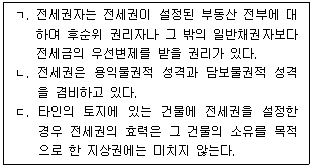
- ㄱ
- ㄷ
- ㄱ, ㄴ
- ㄴ, ㄷ
- ㄱ, ㄴ, ㄷ
(정답률: 알수없음)
24. 유치권에 관한 설명으로 옳지 않은 것은? (다툼이 있으면 판례에 따름)
- 유치권의 행사는 피담보채권의 소멸시효의 진행에 영향을 미치지 아니한다.
- 유치권자는 피담보채권 전부의 변제를 받을 때까지 유치물 전부에 대하여 그 권리를 행사할 수 있다.
- 근저당권설정 후 그 실행에 따른 경매로 인한 압류의 효력이 발생하기 전에 취득한 유치권으로 경매절차의 매수인에게 대항할 수 없다.
- 피담보채권의 채무자를 직접점유자로 하여 채권자가 간접점유하는 경우에 유치권은 성립하지 않는다.
- 유치권자는 경매로 인한 매수인에 대하여 그 피담보채권의 변제가 있을 때까지 유치목적물의 인도를 거절할 수 있을 뿐, 그 피담보채권의 변제를 청구할 수는 없다.
(정답률: 알수없음)
25. 부동산 등기부취득시효의 요건이 아닌 것은? (다툼이 있으면 판례에 따름)
- 점유자의 등기취득에 대한 선의ㆍ무과실
- 10년간의 점유
- 자주점유
- 평온ㆍ공연한 점유
- 10년간의 등기
(정답률: 알수없음)
26. 저당권에 관한 설명으로 옳지 않은 것은? (다툼이 있으면 판례에 따름)
- 저당물의 소유권을 취득한 제3자는 경매인이 될 수 없다.
- 토지를 목적으로 저당권을 설정한 후 그 설정자가 그 토지에 건물을 축조하고 소유한 경우, 저당권자는 토지와 함께 그 건물에 대하여도 경매를 청구할 수 있다.
- 저당부동산에 대하여 저당권에 기한 압류가 있으면, 압류 이후의 저당권설정자의 저당부동산에 관한 차임채권에도 저당권의 효력이 미친다.
- 저당부동산에 대하여 지상권을 취득한 제3자는 저당권자에게 그 부동산으로 담보된 채권을 변제하고 저당권의 소멸을 청구할 수 있다.
- 저당권설정자의 책임있는 사유로 인하여 저당물의 가액이 현저히 감소된 때에는 저당권자는 저당권설정자에 대하여 그 원상회복 또는 상당한 담보제공을 청구할 수 있다.
(정답률: 알수없음)
27. 다음 설명 중 옳은 것은? (다툼이 있으면 판례에 따름)
- 미등기 무허가건물의 양수인은 소유권에 준하는 관습상의 물권을 취득한다.
- 등기는 물권의 존속요건이므로, 등기가 불법 말소되면 물권은 소멸한다.
- 소유권이전등기의 원인으로 주장된 계약서가 진정하지 않은 것으로 증명되어도 그 등기의 적법추정은 복멸되지 않는다.
- 지하 또는 지상의 공간은 상하의 범위를 정하여 건물 기타 공작물을 소유하기 위한 구분지상권의 목적으로 할 수 없다.
- 공유자 중 1인이 다른 공유자의 동의 없이 그 공유 토지의 특정부분을 매도하여 타인명의로 소유권이전등기를 마친 경우, 그 매도부분 토지에 관한 소유권이전등기는 처분공유자의 공유지분 범위 내에서는 유효한 등기이다.
(정답률: 알수없음)
28. 소유권에 기한 물권적 청구권에 관한 설명으로 옳지 않은 것은? (다툼이 있으면 판례에 따름)
- 아직 건물의 소유권을 취득하지 못한 건물매수인은 그 건물의 불법점거자에 대하여 직접 건물의 명도청구를 할 수 없다.
- 소유물반환청구권의 상대방인 점유자가 그 물건을 점유할 권리가 있는 때에는 반환을 거부할 수 있다.
- 토지의 점유자가 점유취득시효를 완성한 경우에도 토지소유자는 그 토지의 인도를 청구할 수 있다.
- 소유권에 기한 물권적 청구권은 소멸시효의 대상이 되지 않는다.
- 소유물방해예방청구권에서 관념적인 방해의 가능성만으로는 방해의 염려가 있다고 할 수 없다.
(정답률: 알수없음)
29. 법률행위에 의하지 않은 물권변동에 관한 설명으로 옳지 않은 것은? (다툼이 있으면 판례에 따름)
- 법정저당권은 저당권설정등기 없이 성립한다.
- 부동산소유권을 확인하는 판결에 의해서도 등기 없이 그 부동산의 소유권을 취득한다.
- 공경매에 있어서 부동산 물권변동의 시기는 매각허가결정이 확정된 후 매수인이 매각대금을 완납한 때이다.
- 자기의 비용과 노력으로 건물을 신축한 건축주는 건물의 소유권을 등기없이 취득한다.
- 상속에 의한 물권변동은 피상속인의 사망 시에 발생한다.
(정답률: 알수없음)
30. 甲소유 게임기 X를 乙이 빌려서 사용하던 중, 乙은 이러한 사정을 과실 없이 알지 못하는 丙에게 X를 50만원에 평온ㆍ공연하게 매도하고 점유를 이전해 주었다. 이에 관한 설명으로 옳은 것은? (다툼이 있으면 판례에 따름)
- 점유에는 공신력이 없으므로 丙은 X의 소유권을 선의취득할 수 없다.
- 乙과 丙간의 매매계약이 무효이더라도 丙은 X의 소유권을 선의취득할 수 있다.
- 丙이 점유개정으로 점유를 취득하였더라도 X의 소유권을 선의취득할 수 있다.
- 만약 乙의 점유보조자가 X를 절취하여 丙에게 매도하였더라도 丙은 X의 소유권을 선의취득할 수 있다.
- 만일 X가 게임기가 아니라 건물인 경우에도 丙은 소유권을 선의취득할 수 있다.
(정답률: 알수없음)
31. 부동산등기에 관한 설명으로 옳지 않은 것은? (다툼이 있으면 판례에 따름)
- 멸실된 건물의 보존등기를 신축한 건물의 보존등기로 유용하는 것은 허용되지 않는다.
- 소유자로부터 토지를 적법하게 매수한 매수인의 소유권이전등기가 위조된 서류에 의하여 경료되었더라도 그 등기는 유효하다.
- 가등기된 권리의 이전등기는 가등기에 대한 부기등기의 형식으로는 경료할 수 없다.
- 명의자를 달리하는 중복보존등기가 부동산을 표상함에 부족함이 없는 경우, 선행등기가 원인무효가 아닌 한 후행등기는 실체적 권리관계에 부합하더라도 무효이다.
- 지분이전등기가 경료된 경우 그 등기는 적법하게 된 것으로서 진실한 권리상태를 공시하는 것이라고 추정된다.
(정답률: 알수없음)
32. 점유에 관한 설명으로 옳지 않은 것은? (다툼이 있으면 판례에 따름)
- 점유자는 소유의 의사로 선의, 평온 및 공연하게 점유한 것으로 추정된다.
- 승계취득자가 전점유자의 점유를 아울러 주장하는 경우에는 그 점유의 하자도 승계한다.
- 임치관계로 타인으로 하여금 물건을 점유하게 한 자는 간접으로 점유권이 있다.
- 선의의 점유자라도 본권에 관한 소에 패소한 때에는 그 판결이 확정된 때로부터 악의의 점유자로 본다.
- 선의의 점유자는 비록 법률상 원인 없이 타인의 건물을 점유ㆍ사용하더라도 그로 인한 이득을 반환할 의무가 없다.
(정답률: 알수없음)
33. 점유보호청구권에 관한 설명으로 옳지 않은 것은? (다툼이 있으면 판례에 따름)
- 점유물방해제거청구권의 행사기간은 출소기간이다.
- 점유보조자에게는 점유물방해제거청구권이 인정되지 않는다.
- 직접점유자가 임의로 점유를 타인에게 이전한 경우, 그 점유이전이 간접점유자의 의사에 반하더라도 간접점유자의 점유가 침탈된 경우에 해당하지 않는다.
- 점유자가 점유의 침탈을 당한 경우, 침탈자의 특별승계인이 악의인 때에도 그 특별승계인에게 점유물반환청구권을 행사할 수 없다.
- 공사로 인하여 점유의 방해를 받은 경우, 공사 착수 후 1년을 경과하거나 그 공사가 완성된 때에는 방해의 제거를 청구하지 못한다.
(정답률: 알수없음)
34. 토지소유권에 관한 설명으로 옳지 않은 것은? (다툼이 있으면 판례에 따름)
- 토지의 소유권은 정당한 이익있는 범위 내에서 토지의 상하에 미친다.
- 명인방법을 갖춘 수목의 집단은 토지의 구성부분이 아니다.
- 토지가 해면 아래에 잠김으로써 포락될 당시를 기준으로 원상복구가 불가능한 상태에 이르면 종전의 소유권은 영구히 소멸된다.
- 토지등기부의 표제부에 토지의 면적이 실제와 다르게 등재되어 있으면, 이러한 등기는 해당 토지를 표상하는 등기로서 효력이 없다.
- 토지 1필지의 공간적 범위를 특정하는 것은 지적도나 임야도의 경계이지 등기부의 표제부나 임야대장ㆍ토지대장에 등재된 면적이 아니다.
(정답률: 알수없음)
35. 부동산 점유취득시효에 관한 설명으로 옳지 않은 것은? (다툼이 있으면 판례에 따름)
- 취득시효가 완성되었으나 아직 소유권이전등기를 경료하지 않은 시효완성자에 대하여 소유자는 점유로 인한 부당이득반환청구를 할 수 없다.
- 시효기간 중 목적부동산이 제3자에게 양도되어 등기가 이전된 경우, 시효기간 만료시 그 양수인을 상대로 시효취득을 주장할 수 있다.
- 소유자가 시효완성 사실을 알고 목적부동산을 제3자에게 처분하고 소유권이전등기를 넘겨준 경우, 소유자는 시효완성자에게 불법행위로 인한 손해배상책임을 진다.
- 시효완성자는 취득시효의 기산점과 관련하여 점유기간을 통틀어 등기명의인이 동일한 경우에는 임의의 시점을 기산점으로 할 수 있다.
- 소유자가 시효완성 사실을 알고 목적부동산을 제3자에게 처분한 경우, 소유자는 시효완성자에게 채무불이행으로 인한 손해배상책임을 진다.
(정답률: 알수없음)
36. 공동소유에 관한 설명으로 옳지 않은 것은? (다툼이 있으면 판례에 따름)
- 비법인사단이 타인 간의 금전채무를 보증하는 행위는 총유물의 관리ㆍ처분행위이므로 사원총회의 결의를 요한다.
- 토지 공유자의 공유지분 포기에 따른 등기는 해당 지분에 관하여 다른 공유자 앞으로 소유권이전등기를 하는 형태가 되어야 한다.
- 합유물에 관하여 경료된 무효의 소유권이전등기 말소청구는 특별한 사정이 없는 한, 합유자 각자가 할 수 있다.
- 공유물분할의 소는 공유자 전원이 소송당사자로 참여해야 하므로, 공동소송인 중 1인에 소송요건의 흠결이 있는 경우 전 소송이 부적법하게 된다.
- 과반수지분권자로부터 공유토지의 특정부분의 점유를 허락받은 제3자는 소수지분권자에 대해서 그 점유로 인한 이득을 부당이득으로 반환할 필요가 없다.
(정답률: 알수없음)
37. 명의신탁의 대상이 될 수 있는 것을 모두 고른 것은? (다툼이 있으면 판례에 따름)
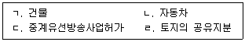
- ㄱ, ㄴ
- ㄱ, ㄴ, ㄹ
- ㄱ, ㄷ, ㄹ
- ㄴ, ㄷ, ㄹ
- ㄱ, ㄴ, ㄷ, ㄹ
(정답률: 알수없음)
38. 지상권에 관한 설명으로 옳지 않은 것은? (다툼이 있으면 판례에 따름)
- 지상권자는 그 권리의 존속기간 내에서 그 토지를 임대할 수 있다.
- 지상권이 소멸한 경우 특별한 사정이 없는 한, 지상권자는 건물 기타 공작물이나 수목을 수거하여 토지를 원상에 회복하여야 한다.
- 지상권자의 지료지급이 토지소유권의 양도 전후에 걸쳐 2년 이상 연체된 경우, 토지양수인에 대한 연체기간이 2년이 되지 않더라도 토지양수인은 지상권소멸청구를 할 수 있다.
- 나대지에 저당권을 설정한 당사자들이 그 목적 토지상에 저당권자 앞으로 저당토지의 담보가치 저감을 막기 위하여 지상권도 설정한 경우, 저당권의 피담보채권이 시효로 소멸하면 지상권도 소멸한다.
- 토지와 그 지상건물이 함께 양도되었다가 채권자취소권의 행사로 그 중 건물에 대해서만 양도가 취소되어 수익자 명의의 소유권이전등기가 말소된 경우, 채무자에게 관습상 법정지상권은 인정되지 않는다.
(정답률: 알수없음)
39. 법정지상권에 관한 설명으로 옳은 것은? (다툼이 있으면 판례에 따름)
- 관습상 법정지상권이 성립하려면 토지와 그 지상건물이 원시적으로 동일인의 소유에 속하고 있어야 한다.
- 토지에 저당권이 설정될 때에 그 지상건물이 미등기인 경우, 저당권 실행으로 토지와 건물의 소유자가 상이하게 되더라도 법정지상권은 인정될 수 없다.
- 환지처분으로 인하여 토지와 그 지상건물의 소유자가 달라진 경우에도 관습상법정지상권은 인정될 수 있다.
- 토지와 그 지상건물의 소유자가 달라질 때, 토지의 사용에 대하여 당사자 사이에 특약이 있는 경우, 관습상 법정지상권은 인정될 수 없다.
- 나대지상에 채권담보를 위한 가등기가 경료된 후에 대지소유자가 그 지상에 건물을 신축하였고, 그 후에 가등기에 기한 본등기가 경료되어 대지와 건물의 소유자가 달라진 경우 관습상 법정지상권이 성립될 수 있다.
(정답률: 알수없음)
40. 동산질권에 관한 설명으로 옳지 않은 것은? (다툼이 있으면 판례에 따름)
- 동산질권도 선의취득의 대상이 될 수 있다.
- 질권설정자는 채무변제기 후의 계약으로 질권자에게 변제에 갈음하여 질물의 소유권을 취득하게 할 것을 약정하지 못한다.
- 수개의 채권을 담보하기 위하여 동일한 동산에 수개의 질권을 설정한 때에는 그 순위는 설정의 선후에 의한다.
- 다른 약정이 없는 한 질권은 원본, 이자, 위약금, 질권실행의 비용, 질물보존의 비용 및 채무불이행 또는 질물의 하자로 인한 손해배상의 채권을 담보한다.
- 정당한 이유가 있는 경우 질권자는 간이변제충당을 법원에 청구할 수 있고, 이때 질권자는 미리 채무자 및 질권설정자에게 통지하여야 한다.
(정답률: 알수없음)
2과목: 경제학원론
41. 재화 X에 대한 시장수요함수, 시장공급함수가 각각 QD = -4P+1600, QS = 8P-800일 때, 균형가격(P*)과 균형거래량(Q*)은? (단, QD는 수요량, QS는 공급량, P는 가격이다.)
- P* = 190, Q* = 840
- P* = 195, Q* = 820
- P* = 200, Q* = 800
- P* = 2⑤, Q* = 780
- P* = 210, Q* = 760
(정답률: 알수없음)
42. 밑줄 친 변화에 따라 각국의 노동시장에서 예상되는 현상으로 옳은 것은? (단, 노동수요곡선은 우하향, 노동공급곡선은 우상향하고, 다른 조건은 일정하다.)
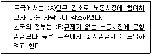
- (A): 노동수요 감소, (B): 초과수요 발생
- (A): 노동수요 증가, (B): 초과공급 발생
- (A): 노동공급 감소, (B): 초과수요 발생
- (A): 노동공급 증가, (B): 초과공급 발생
- (A): 노동공급 감소, (B): 초과공급 발생
(정답률: 알수없음)
43. 밑줄 친 변화에 따라 2018년 Y재 시장에서 예상되는 현상으로 옳지 않은 것은? (단, 수요곡선은 우하향, 공급곡선은 우상향하며, 다른 조건은 일정하다.)
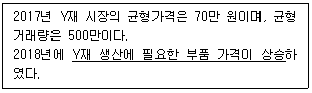
- 공급곡선은 왼쪽으로 이동한다.
- 균형가격은 낮아진다.
- 균형거래량은 줄어든다.
- 소비자잉여는 감소한다.
- 사회적 후생은 감소한다.
(정답률: 알수없음)
44. 주유소에서 휘발유를 구입하는 모든 소비자들은 항상 “5만 원어치 넣어주세요”라고 하는 반면, 경유를 구입하는 모든 소비자들은 항상 “40리터 넣어주세요”라고 한다. 현재의 균형상태에서 휘발유의 공급은 감소하고, 경유의 공급이 증가한다면, 휘발유 시장과 경유 시장에 나타나는 균형가격의 변화는? (단, 휘발유 시장과 경유 시장은 완전경쟁시장이며, 각 시장의 공급곡선은 우상향하고, 다른 조건은 일정하다.)
- 휘발유 시장: 상승, 경유 시장: 상승
- 휘발유 시장: 상승, 경유 시장: 하락
- 휘발유 시장: 하락, 경유 시장: 불변
- 휘발유 시장: 하락, 경유 시장: 하락
- 휘발유 시장: 불변, 경유 시장: 불변
(정답률: 알수없음)
45. 기업 A의 총비용곡선에 관한 설명으로 옳지 않은 것은? (단, 생산요소는 한 종류이며, 요소가격은 변하지 않는다.)
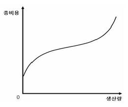
- 총평균비용곡선은 U자 모양을 가진다.
- 총평균비용이 하락할 때 한계비용이 총평균비용보다 크다.
- 평균고정비용곡선은 직각 쌍곡선의 모양을 가진다.
- 생산량이 증가함에 따라 한계비용곡선은 평균가변비용곡선의 최저점을 아래에서 위로 통과한다.
- 생산량이 증가함에 따라 총비용곡선의 기울기가 급해지는 것은 한계생산이 체감하기 때문이다.
(정답률: 알수없음)
46. 甲의 효용함수는
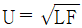
이며 하루 24시간을 여가(L)와 노동(24-L)에 배분한다. 甲은 노동을 통해서만 소득을 얻으며, 소득은 모두 식품(F)을 구매하는 데 사용한다. 시간당 임금은 10,000원, 식품의 가격은 2,500원이다. 甲이 예산제약 하에서 효용을 극대화할 때, 여가시간과 구매하는 식품의 양은?- L=8, F=64
- L=10, F=56
- L=12, F=48
- L=14, F=40
- L=16, F=32
(정답률: 알수없음)
47. 가격차별의 사례가 아닌 것은?
- 영화관 일반 요금은 1만 원, 심야 요금은 8천 원이다.
- 놀이공원 입장료는 성인 5만 원, 청소년 3만원이다.
- 동일한 롱패딩 가격은 겨울에 30만원, 여름에 20만 원이다.
- 동일한 승용차 가격은 서울에서 2,000만 원, 제주에서 1,500만원이다.
- 주간 근무자 수당은 1만 원, 야간 근무자의 수당은 1만5천 원이다.
(정답률: 알수없음)
48. 甲국 정부는 독점기업 A로 하여금 이윤극대화보다는 완전경쟁시장에서와 같이 사회적으로 효율적인 수준에서 생산하도록 규제하려고 한다. 사회적으로 효율적인 생산량이 달성되는 조건은? (단, 수요곡선은 우하향, 기업의 한계비용곡선은 우상향한다.)
- 평균수입 =한계비용
- 평균수입=한계수입
- 평균수입=평균생산
- 한계수입 =한계비용
- 한계수입=평균생산
(정답률: 알수없음)
49. 완전경쟁시장의 시장수요함수는 Q = 1700-10P이고, 이윤극대화를 추구하는 개별기업의 장기평균비용함수는 LAC(q) = (q-20)2+30 으로 모두 동일하다. 장기균형에서 기업의 수는? (단, Q는 시장 거래량, q는 개별 기업의 생산량, P는 가격이다.)
- 100
- 90
- 80
- 70
- 60
(정답률: 알수없음)
50. 완전경쟁시장의 장기균형에 관한 설명으로 옳은 것은?
- 균형가격은 개별기업의 한계수입보다 크다.
- 개별기업의 한계수입은 평균총비용보다 크다.
- 개별기업의 한계비용은 평균총비용보다 작다.
- 개별기업은 장기평균비용의 최저점에서 생산한다.
- 개별기업은 0보다 큰 초과이윤을 얻는다.
(정답률: 알수없음)
51. 복점(duopoly)시장에서 기업 A와 B는 각각 1, 2의 전략을 갖고 있다. 성과보수 행렬(payoff matrix)이 다음과 같을 때, 내쉬균형의 보수쌍은? (단, 보수 행렬 내 괄호 안 왼쪽은 A, 오른쪽은 B의 보수이다.)
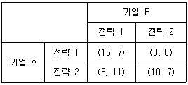
- (15,7)
- (8,6)
- (10,7)
- (3,11)과 (8,6)
- (15,7)과 (10,7)
(정답률: 알수없음)
52. 소비자 甲이 두 재화 X, Y를 소비하고 효용함수는 U(x, y) = xy 이다. X, Y의 가격이 각각 5원, 10원이다. 소비자 甲의 소득이 1,000원일 때, 효용극대화 소비량은? (단, x는 X의 소비량, y는 Y의 소비량이다.)
- x=90, y=55
- x=100, y=50
- x=110, y=45
- x=120, y=40
- x=130, y=35
(정답률: 알수없음)
53. 소비자 甲이 두 재화 X, Y를 소비하고 효용함수는 U(x, y) = min{x+2y, 2x+y} 이다. 소비점 (3,3)을 지나는 무차별곡선의 형태는? (단, x는 X의 소비량, y는 Y의 소비량이다.)
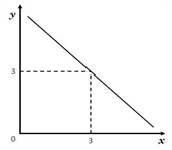
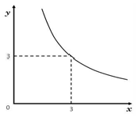
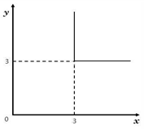
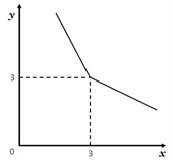
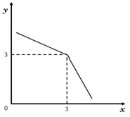
(정답률: 알수없음)
54. 기업 A의 생산함수는 Q = min{L, K}이다. 이에 관한 설명으로 옳은 것을 모두 고른 것은? (단, Q는 산출량, w는 노동 L의 가격, r은 자본 K의 가격이다.)
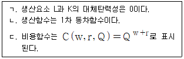
- ㄱ
- ㄴ
- ㄱ, ㄴ
- ㄴ, ㄷ
- ㄱ, ㄴ, ㄷ
(정답률: 알수없음)
55. 효용을 극대화하는 甲은 1기의 소비(c1)와 2기의 소비(c2)로 구성된 효용함수 U(c1, c2) = c1c22을 가지고 있다. 甲은 시점 간 선택(intertemporal choice) 모형에서 1기에 3,000만 원, 2기에 3,300만 원의 소득을 얻고, 이자율 10 %로 저축하거나 빌릴 수 있다. 1기의 최적 선택에 관한 설명으로 옳은 것은? (단, 인플레이션은 고려하지 않는다.)
- 1,000만원을 저축할 것이다.
- 1,000만 원을 빌릴 것이다.
- 저축하지도 빌리지도 않을 것이다.
- 1,400만 원을 저축할 것이다.
- 1,400만원을 빌릴 것이다.
(정답률: 알수없음)
56. 독점기업 A가 직면한 수요함수는 Q = -0.5P+15, 총비용함수는 TC = Q2+6Q+3 이다. 이윤을 극대화할 때, 생산량과 이윤은? (단, P는 가격, Q는 생산량, TC는 총비용이다.)
- 생산량 = 3, 이윤 = 45
- 생산량= 3, 이윤 = 48
- 생산량= 4, 이윤 = 45
- 생산량 = 4, 이윤 = 48
- 생산량= 7, 이윤 = 21
(정답률: 알수없음)
57. 두 생산요소 x1, x2 로 구성된 기업 A의 생산함수가 Q = max{2x1, x2} 이다. 생산요소의 가격이 각각 w1과 w2일 때, 비용함수는?
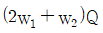
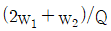
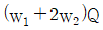
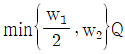
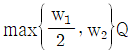
(정답률: 알수없음)
58. 두 재화 맥주(B)와 커피(C)를 소비하는 두 명의 소비자 1과 2가 존재하는 순수교환경제를 가정한다. 소비자 1의 효용함수는 U1(B1, C1) = min{B1, C1}, 소비자 2의 효용함수는 U2(B2, C2) = B2+C2 이다. 소비자 1의 초기 부존자원은 (10,20), 소비자 2의 초기 부존자원은 (20,10)이고, 커피의 가격은 1이다. 일반균형(general equilibrium)에서 맥주의 가격은? (단, 초기 부존자원에서 앞의 숫자는 맥주의 보유량, 뒤의 숫자는 커피의 보유량이다.)
- 1/3
- 1/2
- 1
- 2
- 3
(정답률: 알수없음)
59. 두 생산요소 노동(L)과 자본(K)을 투입하는 생산함수 Q = 2L2+2K2 에서 규모 수익 특성과 노동의 한계생산으로 각각 옳은 것은?
- 규모 수익 체증, 4L
- 규모 수익 체증, 4K
- 규모 수익 체감, 4L
- 규모 수익 체감, 4K
- 규모 수익 불변, 4L
(정답률: 알수없음)
60. ( )에 들어갈 내용으로 옳은 것은?
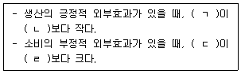
- ㄱ: 사회적 한계비용, ㄴ: 사적 한계비용, ㄷ: 사회적 한계편익, ㄹ: 사적 한계편익
- ㄱ: 사회적 한계비용, ㄴ: 사적 한계비용, ㄷ: 사적 한계편익, ㄹ: 사회적 한계편익
- ㄱ: 사적 한계비용, ㄴ: 사회적 한계비용, ㄷ: 사회적 한계편익, ㄹ: 사적 한계편익
- ㄱ: 사적 한계비용, ㄴ: 사회적 한계비용, ㄷ: 사적 한계편익, ㄹ: 사회적 한계편익
- ㄱ: 사회적 한계편익, ㄴ: 사적 한계편익, ㄷ: 사적 한계비용, ㄹ: 사회적 한계비용
(정답률: 알수없음)
61. GDP 증가요인을 모두 고른 것은?
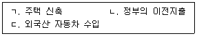
- ㄱ
- ㄴ
- ㄱ, ㄷ
- ㄴ, ㄷ
- ㄱ, ㄴ, ㄷ
(정답률: 알수없음)
62. 물가지수에 관한 설명으로 옳은 것은?
- GDP 디플레이터에는 국내산 최종 소비재만이 포함된다.
- GDP 디플레이터 작성 시 재화와 서비스의 가격에 적용되는 가중치가 매년 달라진다.
- 소비자물가지수 산정에는 국내에서 생산되는 재화만 포함된다.
- 소비자물가지수에는 국민이 구매한 모든 재화와 서비스가 포함된다.
- 생산자물가지수에는 기업이 구매하는 품목 중 원자재를 제외한 품목이 포함된다.
(정답률: 알수없음)
63. 甲국의 실업률은 5 %, 경제활동참가율은 70 %, 비경제활동인구는 600만 명이다. 이 나라의 실업자 수는?
- 30만 명
- 50만 명
- 70만명
- 100만 명
- 120만 명
(정답률: 알수없음)
64. 실업에 관한 설명으로 옳지 않은 것은?
- 균형임금을 초과한 법정 최저임금의 인상은 비자발적 실업을 증가시킨다.
- 실업급여 인상과 기간 연장은 자발적 실업 기간을 증가시킨다.
- 정부의 확장적 재정정책은 경기적 실업을 감소시킨다.
- 인공지능 로봇의 도입은 경기적 실업을 증가시킨다.
- 구직자와 구인자의 연결을 촉진하는 정책은 마찰적 실업을 감소시킨다.
(정답률: 알수없음)
65. 소비이론에 관한 설명으로 옳은 것을 모두 고른 것은?
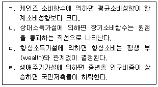
- ㄱ, ㄴ
- ㄱ, ㄷ
- ㄴ, ㄷ
- ㄴ, ㄹ
- ㄷ, ㄹ
(정답률: 알수없음)
66. 토빈(J. Tobin)의 q에 관한 설명으로 옳은 것은?
- 자본 1단위 구입비용이다.
- 자본의 한계생산에서 자본 1단위 구입비용을 뺀 값이다.
- 기존 자본을 대체하는 데 드는 비용이다.
- 시장에서 평가된 기존 자본의 가치이다.
- q 값이 1보다 큰 경우 투자를 증가시켜야 한다.
(정답률: 알수없음)
67. 경제정책에 관한 설명으로 옳은 것을 모두 고른 것은?
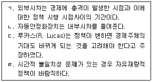
- ㄱ, ㄴ
- ㄱ, ㄷ
- ㄱ, ㄹ
- ㄴ, ㄷ
- ㄴ, ㄹ
(정답률: 알수없음)
68. 개방경제의 국민소득 결정모형이 아래와 같다. 정부지출(G)과 조세(T)를 똑같이 200에서 300으로 늘리면 균형국민소득은 얼마나 늘어나는가? (단, Y는 국민소득이다.)
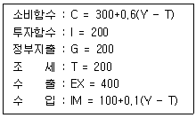
- 0
- 50
- 100
- 200
- 250
(정답률: 알수없음)
69. 수량방정식(MV = PY)과 피셔효과가 성립하는 폐쇄경제에서 화폐유통속도(V)가 일정하고, 인플레이션율이 2%, 통화증가율이 5%, 명목이자율이 6% 라고 할 때, 다음 중 옳은 것을 모두 고른 것은? (단, M은 통화량, P는 물가, Y는 실질소득이다.)
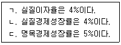
- ㄱ
- ㄴ
- ㄱ, ㄷ
- ㄴ, ㄷ
- ㄱ, ㄴ, ㄷ
(정답률: 알수없음)
70. 경제성장이론에 관한 설명으로 옳은 것은?
- 내생적 성장이론(endogenous growth theory)에 따르면 저소득 국가는 고소득 국가보다 빨리 성장하여 수렴현상이 발생한다.
- 내생적 성장이론에 따르면 균제상태의 경제성장률은 외생적 기술진보 증가율이다.
- 솔로우 경제성장 모형에서 황금률은 경제성장률을 극대화하는 조건이다.
- 솔로우 경제성장 모형에서 인구 증가율이 감소하면, 균제상태에서의 1인당 소득은 감소한다.
- 솔로우 경제성장 모형에서 균제상태에 있으면, 총자본스톡 증가율과 인구 증가율이 같다.
(정답률: 알수없음)
71. 甲국의 국민소득(Y)은 소비(C), 민간투자(I), 정부지출(G), 순수출(NX)의 합과 같다. 2016년과 같이 2017년에도 조세(T)와 정부지출의 차이(T-G)는 음(-)이었고 절대크기는 감소하였으며, 순수출은 양(+)이었지만 절대크기는 감소하였다. 이로부터 유추할 수 있는 2017년의 상황으로 옳은 것을 모두 고른 것은?
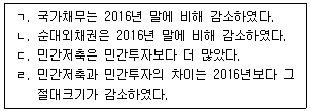
- ㄱ, ㄴ
- ㄱ, ㄷ
- ㄴ, ㄷ
- ㄴ, ㄹ
- ㄷ, ㄹ
(정답률: 알수없음)
72. 甲국 통화당국의 손실함수와 필립스곡선이 다음과 같다. 인플레이션율에 대한 민간의 기대가 형성되었다. 이후, 통화당국이 손실을 최소화하기 위한 목표 인플레이션율은? (단, π, πe, u, un은 각각 인플레이션율, 민간의 기대인플레이션율, 실업률, 자연실업률이고, 단위는 %이다.)
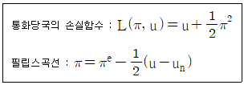
- 0 %
- 1 %
- 2 %
- 3 %
- 4 %
(정답률: 알수없음)
73. 투자자 甲은 100으로 기업 A, B의 주식에만 (기업 A에 x, 기업 B에 100-x) 투자한다. 표는 기업 A의 신약 임상실험 성공여부에 따른 기업 A, B의 주식투자 수익률이다. 임상실험의 결과와 관계없이 동일한 수익을 얻을 수 있도록 하는 x는?
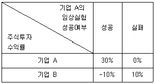
- 20
- 25
- 30
- 40
- 50
(정답률: 알수없음)
74. 甲국은 자본이동이 완전히 자유로운 소규모 개방경제이다. 변동환율제도 하에서 甲국의 거시경제모형이 다음과 같을 때, 정책효과에 관한 설명으로 옳지 않은 것은? (단, Y, M, r, e, p, r*, p* 는 각각 국민소득, 통화량, 이자율, 명목환율, 물가, 외국이자율, 외국물가이다.)
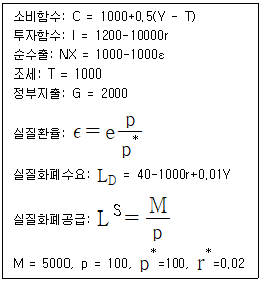
- 정부지출을 증가시켜도 균형소득은 변하지 않는다.
- 조세를 감면해도 균형소득은 변하지 않는다.
- 통화공급을 증가시키면 균형소득은 증가한다.
- 확장적 재정정책을 실시하면 e가 상승한다.
- 확장적 통화정책을 실시하면 r이 하락한다.
(정답률: 알수없음)
75. 모든 시장이 완전경쟁 상태인 경제에서 총생산함수는 Y = AL2/3K1/3이다. 매년 L, K, A가 각각 3 %씩 증가하는 경제에 관한 설명으로 옳은 것을 모두 고른 것은? (단, Y는 국내총생산, L은 노동량, K는 자본량, A는 상수이다.)
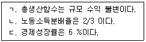
- ㄱ
- ㄴ
- ㄱ, ㄴ
- ㄴ, ㄷ
- ㄱ, ㄴ, ㄷ
(정답률: 알수없음)
76. ( )에 들어갈 내용으로 옳은 것은?
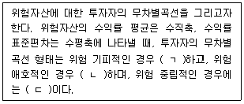
- ㄱ: 우상향, ㄴ: 우상향, ㄷ: 수평
- ㄱ: 우상향, ㄴ: 우하향, ㄷ: 수평
- ㄱ: 우상향, ㄴ: 우하향, ㄷ: 수직
- ㄱ: 우하향, ㄴ: 우상향, ㄷ: 수평
- ㄱ: 우하향, ㄴ: 우상향, ㄷ: 수직
(정답률: 알수없음)
77. 국제수지표의 금융계정(financial account)에 포함되는 거래가 아닌 것은?
- 한국 기업이 외국인 투자자에게 배당금을 지불한다.
- 한국 기업이 베트남 기업에 대해 50 % 이상의 주식지분을 매입한다.
- 외국 금융기관이 한국 국채를 매입한다.
- 한국 금융기관이 외화자금을 차입한다.
- 한국은행이 미국 재무성 채권을 매입한다.
(정답률: 알수없음)
78. 총수요곡선이 오른쪽으로 이동하는 이유로 옳은 것을 모두 고른 것은?
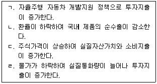
- ㄱ, ㄴ
- ㄱ, ㄷ
- ㄴ, ㄷ
- ㄴ, ㄹ
- ㄷ, ㄹ
(정답률: 알수없음)
79. 총수요-총공급 모형에서 일시적인 음(-)의 총공급 충격이 발생한 경우를 분석한 설명으로 옳지 않은 것은? (단, 총수요곡선은 우하향, 총공급곡선은 우상향한다.)
- 확장적 통화정책은 국민소득을 감소시킨다.
- 스태그플레이션을 발생시킨다.
- 단기 총공급곡선을 왼쪽으로 이동시킨다.
- 통화정책으로 물가 하락과 국민소득 증가를 동시에 달성할 수 없다.
- 재정정책으로 물가 하락과 국민소득 증가를 동시에 달성할 수 없다.
(정답률: 알수없음)
80. 경기안정화 정책에 관한 설명으로 옳은 것은?
- 재정지출 증가로 이자율이 상승하지 않으면 구축효과는 크게 나타난다.
- 투자가 이자율에 비탄력적일수록 구축효과는 크게 나타난다.
- 한계소비성향이 클수록 정부지출의 국민소득 증대효과는 작게 나타난다.
- 소득이 증가할 때 수입재 수요가 크게 증가할수록 정부지출의 국민소득 증대효과는 크게 나타난다.
- 소득세가 비례세보다는 정액세일 경우에 정부지출의 국민소득 증대효과는 크게 나타난다.
(정답률: 알수없음)
3과목: 부동산학원론
81. 다음의 내용과 모두 관련된 토지의 특성은?
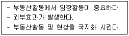
- 영속성
- 부증성
- 부동성
- 개별성
- 기반성
(정답률: 알수없음)
82. 부동산활동과 관련된 다음의 내용을 설명하는 용어로 옳게 연결된 것은?
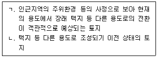
- ㄱ: 후보지, ㄴ: 소지
- ㄱ: 후보지, ㄴ: 공지
- ㄱ: 이행지, ㄴ: 소지
- ㄱ: 이행지, ㄴ: 공지
- ㄱ: 성숙지, ㄴ: 소지
(정답률: 알수없음)
83. 입목에 관한 법령상 옳지 않은 것은?
- 입목의 소유자는 토지와 분리하여 입목을 양도할 수 있다.
- 입목을 위한 법정지상권은 성립하지 않는다.
- 토지소유권 또는 지상권 처분의 효력은 입목에 미치지 않는다.
- 입목을 목적으로 하는 저당권의 효력은 입목을 베어 낸 경우에 그 토지로부터 분리된 수목에도 미친다.
- 지상권자에게 속하는 입목이 저당권의 목적이 되어 있는 경우에는 지상권자는 저당권자의 승낙 없이 그 권리를 포기할 수 없다.
(정답률: 알수없음)
84. 소급감정평가를 의뢰받은 감정평가사 A는 종전 감정평가서의 관련서류인 등기부등본을 통해 감정평가대상 임야의 면적이 1정 3무인 것을 확인하였다. 감정평가서 기재를 위한 사정면적은? (단, 임야대장에 등록되는 면적으로 사정하며, 임야도의 축척은 1 : 3,000임)
- 12,893 m2
- 10,215 m2
- 9,947 m2
- 4,298 m2
- 3,4⑤ m2
(정답률: 알수없음)
85. 부동산과 준부동산에 관한 설명으로 옳은 것은? (다툼이 있으면 판례에 따름)
- 신축 중인 건물은 사용승인이 완료되기 전에는 토지와 별개의 부동산으로 취급되지 않는다.
- 개개의 수목은 명인방법을 갖추더라도 토지와 별개의 부동산으로 취급되지 않는다.
- 토지에 정착된 담장은 토지와 별개의 부동산으로 취급된다.
- 자동차에 관한 압류등록은 자동차 등록원부에 한다.
- 총톤수 10톤 이상의 기선(機船)과 범선(帆船)은 등기가 가능하다.
(정답률: 알수없음)
86. 부동산시장의 효율성에 관한 설명으로 옳지 않은 것은? (단, 다른 조건은 고려하지 않음)
- 약성 효율적 시장은 현재의 시장가치가 과거의 추세를 충분히 반영하고 있는 시장이다.
- 준강성 효율적 시장은 어떤 새로운 정보가 공표되는 즉시 시장가치에 반영되는 시장이다.
- 강성 효율적 시장은 공표된 것이건 공표되지 않은 것이건 어떠한 정보도 이미 시장가치에 반영되어 있는 시장이다.
- 부동산시장은 주식시장이나 일반상품시장보다 더 불완전하고 비효율적이므로 할당 효율적일 수 없다.
- 부동산시장의 제약조건을 극복하는 데 소요되는 거래비용이 타 시장보다 부동산시장을 더 비효율적이게 하는 주요한 요인이다.
(정답률: 알수없음)
87. 입지 및 도시공간구조이론에 관한 설명으로 옳지 않은 것은?
- 최소마찰비용이론은 경제부문의 집적화 이익이 시공간적으로 누적적 인과 과정을 통해 낙후된 지역까지 파급된다고 본다.
- 알론소(Alonso)의 입찰지대곡선은 도심으로부터 교외로 이동하면서 거리에 따라 가장 높은 지대를 지불할 수 있는 산업들의 지대곡선을 연결한 선이다.
- 해리스(Harris)와 울만(Ullman)의 다핵심이론은 서로 유사한 활동이 집적하려는 특성이 있다고 본다.
- 버제스(Burgess)의 동심원이론은 침입, 경쟁, 천이과정을 수반하는 생태학적 논리에 기반하고 있다.
- 호이트(Hoyt)의 선형이론은 도시공간의 성장 및 분화가 주요 교통노선을 따라 확대되면서 나타난다고 본다.
(정답률: 알수없음)
88. 전국에 세 개의 지역(A, B, C)과 세 개의 산업(제조업, 금융업, 숙박업)만 존재한다고 가정할 때 입지계수에 관한 설명으로 옳은 것은?
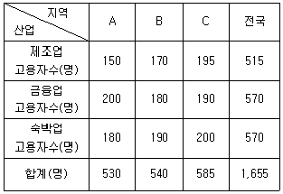
- B지역의 제조업은 A지역의 숙박업보다 입지계수가 낮다.
- A지역의 숙박업은 C지역의 금융업보다 입지계수가 높다.
- A지역의 숙박업과 B지역의 제조업의 입지계수는 같다.
- A지역의 제조업은 C지역의 숙박업보다 입지계수가 높다.
- B지역의 제조업은 C지역의 금융업보다 입지계수가 낮다.
(정답률: 알수없음)
89. 부동산정책의 시행으로 A지역 아파트시장의 공급함수는 일정하고 수요함수는 다음과 같이 변화되었다. 이 경우 y축, 수요곡선, 공급곡선으로 둘러싸인 도형의 면적과 균형거래량의 변화는? (단, 거래량과 도형 면적의 단위는 무시하며, x축은 수량, y축은 가격을 나타냄)
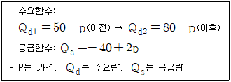
- 면적: 700 증가, 균형거래량: 10 증가
- 면적: 900 증가, 균형거래량: 10 증가
- 면적: 700 증가, 균형거래량: 20 증가
- 면적: 900 증가, 균형거래량: 20 증가
- 면적: 700 증가, 균형거래량: 30 증가
(정답률: 알수없음)
90. 부동산의 가치와 가격에 관한 설명으로 옳지 않은 것은?
- 일정시점에서 부동산가격은 하나 밖에 없지만, 부동산가치는 여러 개 있을 수 있다.
- 부동산가격은 장기적 고려 하에서 형성된다.
- 부동산의 가격과 가치 간에는 오차가 있을 수 있으며, 이는 감정평가 필요성의 근거가 된다.
- 부동산가격은 시장경제에서 자원배분의 기능을 수행한다.
- 부동산가치는 부동산의 소유에서 비롯되는 현재의 편익을 미래가치로 환원한 값이다.
(정답률: 알수없음)
91. D도시 인근에 A, B, C 세 개의 쇼핑센터가 있다. 허프(Huff)의 상권분석모형을 적용할 경우, 각 쇼핑센터의 이용객 수는? (단, 거리마찰계수: 2, D도시인구의 40%가 위 쇼핑센터의 이용객이고, A, B, C 중 한 곳에서만 쇼핑함)
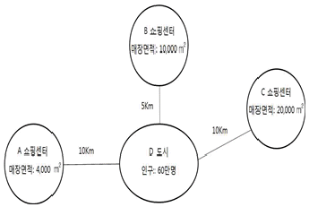
- A: 15,000명, B: 150,000명, C: 75,000명
- A: 15,000명, B: 155,000명, C: 70,000명
- A: 15,000명, B: 160,000명, C: 65,000명
- A: 16,000명, B: 150,000명, C: 74,000명
- A: 16,000명, B: 155,000명, C: 69,000명
(정답률: 알수없음)
92. 다음과 같은 상황이 주어졌을 때 총투자수익률(ROI: return on investment)과 부채감당률(DCR: debt coverage ratio)은? (단, 총투자기간은 1년, 수치는 소수점 이하 둘째자리에서 반올림함)(문제 오류로 가답안 발표시 1번으로 발표되었지만 확정답안 발표시 모두 정답처리 되었습니다. 여기서는 가답안인 1번을 누르면 정답 처리 됩니다.)
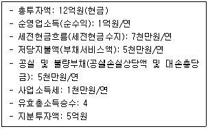
- 총투자수익률: 29.2%, 부채감당률: 2.0
- 총투자수익률: 29.2%, 부채감당률: 2.4
- 총투자수익률: 33.3%, 부채감당률: 2.0
- 총투자수익률: 33.3%, 부채감당률: 2.4
- 총투자수익률: 37.2%, 부채감당률: 3.0
(정답률: 알수없음)
93. 부동산 투자타당성 분석기법에 관한 설명으로 옳지 않은 것은?
- 수익성지수는 투자개시시점에서의 순현가와 현금지출의 현재가치 비율이다.
- 내부수익률법은 화폐의 시간가치를 고려한다.
- 동일한 투자안에 대해서 복수의 내부수익률이 존재할 수 있다.
- 내부수익률은 순현가가 '0'이 되는 할인율이다.
- 순현가법에 적용되는 할인율은 요구수익률이다.
(정답률: 알수없음)
94. 포트폴리오 이론에 따른 부동산투자의 포트폴리오 분석에 관한 설명으로 옳지 않은 것은?
- 체계적 위험은 분산투자를 통해서도 회피할 수 없다.
- 위험과 수익은 상충관계에 있으므로 효율적 투자선은 우하향하는 곡선이다.
- 투자자의 무차별곡선과 효율적 투자선의 접점에서 최적의 포트폴리오가 선택된다.
- 비체계적 위험은 개별적인 부동산의 특성으로 야기되며 분산투자 등으로 회피할 수 있다.
- 포트폴리오 구성자산의 수익률 간 상관계수(ρ)가 '-1'인 경우는 상관계수(ρ)가 '1'인 경우에 비해서 위험 회피효과가 더 크다.
(정답률: 알수없음)
95. 경제상황별 예상수익률이 다음과 같을 때, 상가 투자안의 변동계수(coefficient of variation)는? (단, 호황과 불황의 확률은 같음)
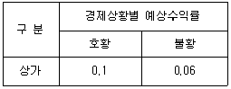
- 0.25
- 0.35
- 0.45
- 0.55
- 0.65
(정답률: 알수없음)
96. 우리나라의 부동산투자회사제도에 관한 설명으로 옳지 않은 것은?
- 자기관리 부동산투자회사의 설립 자본금은 5억원 이상이다.
- 부동산투자회사는 발기설립의 방법으로 하여야 하며, 현물출자에 의한 설립이 가능하다.
- 위탁관리 부동산투자회사는 자산의 투자ㆍ운용업무를 자산관리회사에 위탁하여야 한다.
- 부동산투자회사는 최저자본금준비기간이 끝난 후에는 매 분기 말 현재 총자산의 100분의 80 이상을 부동산, 부동산 관련 증권 및 현금으로 구성하여야 한다.
- 부동산투자회사의 상근 임원은 다른 회사의 상근 임직원이 되거나 다른 사업을 하여서는 아니 된다.
(정답률: 알수없음)
97. 다음과 같이 고정금리부 원리금균등분할상환조건의 주택저당대출을 받는 경우 매월 상환해야하는 원리금을 구하는 산식은?
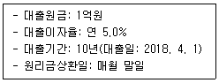
- 1억원 × [(1+0.⑤)10-1] / [0.⑤×(1+0.⑤)10]
- 1억원 × [0.⑤×(1+0.⑤)10] / [(1+0.⑤)10-1]
- 1억원 × [0.⑤×(1+0.⑤)120] / [(1+0.⑤)120-1]
- 1억원 × [0.⑤/12×(1+0.⑤/12)120] / [(1+0.⑤/12)120-1]
- 1억원 × [(1+0.⑤/12)120-1] / [0.⑤/12×(1+0.⑤/12)120]
(정답률: 알수없음)
98. 한국주택금융공사법령에 의한 주택담보노후연금제도에 관한 설명으로 옳지 않은 것은?
- 주택소유자와 그 배우자 모두 60세 이상이어야 이용할 수 있다.
- 연금지급방식으로 주택소유자가 선택하는 일정한 기간 동안 노후생활자금을 매월 지급받는 방식이 가능하다.
- 주택담보노후연금보증을 받은 사람은 담보주택의 소유권등기에 한국주택금융공사의 동의 없이는 제한물권을 설정하거나 압류 등의 목적물이 될 수 없는 재산임을 부기등기 하여야 한다.
- 주택담보노후연금을 받을 권리는 양도하거나 압류할 수 없다.
- 한국주택금융공사는 주택담보노후연금보증을 받으려는 사람에게 소유주택에 대한 저당권 설정에 관한 사항을 설명하여야 한다.
(정답률: 알수없음)
99. 프로젝트 사업주(sponsor)가 특수목적회사인 프로젝트 회사를 설립하여 특정프로젝트 수행에 필요한 자금을 금융회사로부터 대출받는 방식의 프로젝트 파이낸싱(PF)에 관한 설명으로 옳은 것을 모두 고른 것은? (단, 프로젝트 사업주가 프로젝트 회사를 위해 보증이나 담보제공을 하지 않음)
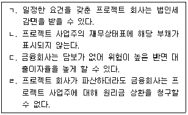
- ㄱ, ㄴ, ㄷ
- ㄱ, ㄴ, ㄹ
- ㄱ, ㄷ, ㄹ
- ㄴ, ㄷ, ㄹ
- ㄱ, ㄴ, ㄷ, ㄹ
(정답률: 알수없음)
100. 시장실패 또는 정부의 시장개입에 관한 설명으로 옳지 않은 것은?
- 외부효과는 시장실패의 원인이 된다.
- 소비의 비경합성과 비배제성을 수반하는 공공재는 시장실패의 원인이 된다.
- 정보의 비대칭성은 시장실패의 원인이 아니다.
- 시장가격에 임의로 영향을 미칠 수 있는 독과점 공급자의 존재는 시장실패의 원인이 된다.
- 시장실패의 문제를 해결하기 위하여 정부는 시장에 개입할 수 있다.
(정답률: 알수없음)
101. 현재 우리나라에서 시행중인 부동산정책이 아닌 것은?
- 토지거래허가제
- 실거래가신고제
- 개발이익환수제
- 분양가상한제
- 택지소유상한제
(정답률: 알수없음)
102. 정부의 간접적 시장개입방법이 아닌 것은?
- 주택에 대한 금융지원정책
- 토지비축정책
- 토지에 대한 조세감면정책
- 토지거래에 관한 정보체계 구축
- 임대주택에 대한 임대료 보조
(정답률: 알수없음)
103. 부동산조세에 관한 설명으로 옳은 것은?
- 취득세와 재산세는 비례세율을 적용한다.
- 상속세와 등록면허세는 누진세율을 적용한다.
- 종합부동산세와 상속세는 국세에 속한다.
- 증여세와 재산세는 보유세에 속한다.
- 취득세와 증여세는 지방세에 속한다.
(정답률: 알수없음)
104. 양도소득세의 과세대상인 양도소득에 속하지 않는 것은?
- 지상권의 양도로 발생하는 소득
- 전세권의 양도로 발생하는 소득
- 지역권의 양도로 발생하는 소득
- 등기된 부동산임차권의 양도로 발생하는 소득
- 부동산을 취득할 수 있는 권리의 양도로 발생하는 소득
(정답률: 알수없음)
1⑤. 다음에 해당하는 민간투자사업방식은?
- BOT(Build-Own-Transfer) 방식
- BTO(Build-Transfer-Operate) 방식
- BTL(Build-Transfer-Lease) 방식
- BLT(Build-Lease-Transfer) 방식
- BOO(Build-Own-Operate) 방식
(정답률: 알수없음)
106. 부동산관리에 관한 설명으로 옳은 것은?
- 시설관리(facility management)는 부동산시설의 자산 및 부채를 종합관리하는 것으로 시설사용자나 기업의 요구에 따르는 적극적인 관리에 해당한다.
- 자기관리방식은 입주자와의 소통 측면에 있어서 위탁관리방식에 비해 유리한 측면이 있다.
- 위탁관리방식은 자기관리방식에 비해 기밀유지가 유리한 측면이 있다.
- 혼합관리방식은 자기관리방식에 비해 문제발생시 책임소재 파악이 용이하다.
- 건물의 고층화와 대규모화가 진행되면서 위탁관리방식에서 자기관리방식으로 바뀌는 경향이 있다.
(정답률: 알수없음)
107. 부동산마케팅에 관한 설명으로 옳지 않은 것은?
- 부동산 공급자가 부동산시장을 점유하기 위한 일련의 활동을 시장점유마케팅전략이라 한다.
- AIDA 원리는 소비자가 대상 상품을 구매할 때까지 나타나는 심리 변화의 4단계를 의미한다.
- 시장점유마케팅전략에 해당되는 STP전략은 시장세분화(segmentation), 표적시장선정(targeting), 포지셔닝(positioning)으로 구성된다.
- 고객점유마케팅전략에 해당되는 4P MIX전략은 유통경로(place), 제품(product), 위치선점(position), 판매촉진(promotion)으로 구성된다.
- 고객점유마케팅전략은 AIDA 원리를 적용하여 소비자의 욕구를 충족시키기 위해 수행된다.
(정답률: 알수없음)
108. 부동산개발의 사업타당성분석에 관한 설명으로 옳지 않은 것은?
- 물리적 타당성분석은 대상 부지의 지형, 지세, 토질과 같은 물리적 요인들이 개발대상 부동산의 건설 및 운영에 적합한지 여부를 분석하는 과정이다.
- 법률적 타당성분석은 대상 부지와 관련된 법적 제약조건을 분석해서 대상 부지내에서 개발 가능한 용도와 개발규모를 판단하는 과정이다.
- 경제적 타당성분석은 개발사업에 소요되는 비용, 수익, 시장수요와 공급 등을 분석하는 과정이다.
- 민감도분석은 사업타당성분석의 주요 변수들의 초기투입 값을 변화시켰을 때 수익성의 변화를 예측하는 과정이다.
- 투자결정분석은 부동산개발에 영향을 미치는 인근 환경요소의 현황과 전망을 분석하는 과정이다.
(정답률: 알수없음)
109. 다음과 같은 이유들로 인해 나타날 수 있는 부동산투자의 위험은?
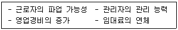
- 인플레이션위험
- 금융위험
- 유동성위험
- 입지위험
- 운영위험
(정답률: 알수없음)
110. 공시지가기준법에 의한 토지의 감정평가시 개별요인 세항목의 비교내용이 다음의 표와 같을 때 개별요인 비교치(격차율)는? (단, 주어진 자료 이외의 내용은 없음)
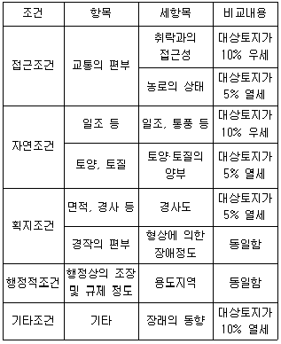
- 0.980
- 0.955
- 0.950
- 0.943
- 0.934
(정답률: 알수없음)
111. 감정평가에 관한 규칙에서 규정하고 있는 내용으로 옳지 않은 것은?
- 감정평가업자는 자신의 능력으로 업무수행이 불가능한 경우 감정평가를 하여서는 아니 된다.
- 감정평가업자는 감정평가조건의 합리성이 결여되었다고 판단할 때에는 감정평가의뢰를 거부할 수 있다.
- 유사지역이란 감정평가의 대상이 된 부동산이 속한 지역으로서 인근지역과 유사한 특성을 갖는 지역을 말한다.
- 둘 이상의 대상물건 상호간에 용도상 불가분의 관계가 있는 경우에는 일괄하여 감정평가할 수 있다.
- 기준시점을 미리 정하였을 때에는 그 날짜에 가격조사가 가능한 경우에만 기준시점으로 할 수 있다.
(정답률: 알수없음)
112. 감정평가에 관한 규칙상 대상물건별 주된 감정평가방법으로 옳지 않은 것은?
- 임대료 – 임대사례비교법
- 자동차 – 거래사례비교법
- 비상장채권 – 수익환원법
- 건설기계 – 원가법
- 과수원 - 공시지가기준법
(정답률: 알수없음)
113. 우리나라의 부동산가격공시제도에 관한 설명으로 옳은 것은?
- 다가구주택은 공동주택가격의 공시대상이다.
- 개별공시지가의 공시기준일이 6월 1일인 경우도 있다.
- 표준주택에 그 주택의 사용ㆍ수익을 제한하는 권리가 설정되어 있을 때에는 이를 반영하여 적정가격을 산정하여야 한다.
- 국세 또는 지방세 부과대상이 아닌 단독주택은 개별주택가격을 결정ㆍ공시하지 아니할 수 있다.
- 표준지공시지가의 공시권자는 시장ㆍ군수ㆍ구청장이다.
(정답률: 알수없음)
114. 감정평가사 A는 표준지공시지가의 감정평가를 의뢰받고 현장조사를 통해 표준지에 대해 다음과 같이 확인하였다. 표준지조사평가보고서의 토지특성 기재방법으로 옳게 연결된 것은?
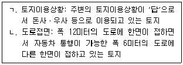
- ㄱ: 목장용지, ㄴ: 중로각지
- ㄱ: 목장용지, ㄴ: 소로각지
- ㄱ: 답기타, ㄴ: 중로각지
- ㄱ: 답기타, ㄴ: 소로각지
- ㄱ: 답축사, ㄴ: 중로각지
(정답률: 알수없음)
115. 감정평가에 관한 규칙상 감정평가업자가 의뢰인과 협의하여 확정할 기본적 사항이 아닌 것은?
- 감정평가 목적
- 감정평가조건
- 실지조사 여부
- 기준가치
- 수수료 및 실비에 관한 사항
(정답률: 알수없음)
116. 공인중개사법령상 개업공인중개사가 주택을 중개하는 경우 확인ㆍ설명해야 할 사항이 아닌 것은?
- 일조ㆍ소음ㆍ진동 등 환경조건
- 벽면 및 도배의 상태
- 중개대상물의 최유효이용상태
- 중개대상물의 권리관계
- 시장ㆍ학교와의 접근성 등 입지조건
(정답률: 알수없음)
117. 공인중개사법령상 법인인 개업공인중개사가 할 수 있는 업무가 아닌 것은?
- 주택의 분양대행
- 부동산의 이용에 관한 상담
- 민사집행법에 의한 경매대상 부동산의 취득알선
- 상업용 건축물의 관리대행
- 부동산거래의 안전보장을 위한 계약금ㆍ중도금의 보관
(정답률: 알수없음)
118. 감정평가사 A는 권리분석을 위해 등기사항전부증명서를 발급하였다. 등기사항전부증명서의 을구에서 확인가능한 내용은?
- 구분지상권
- 유치권
- 가압류
- 점유권
- 예고등기
(정답률: 알수없음)
119. 부동산경매에서 어떤 권리들은 말소촉탁의 대상이 되지 않고 낙찰자가 인수해야 하는 권리가 있다. 부동산경매의 권리분석에서 말소와 인수의 판단기준이 되는 권리인 말소기준권리가 될 수 없는 것은?
- 압류
- 전세권
- 근저당권
- 담보가등기
- 강제경매개시결정등기
(정답률: 알수없음)
120. 다음의 자료는 수익형 부동산 A에 관한 내용이다. 수익환원법에 적용할 순수익은? (단, 모든 금액은 연 기준이며, 제시된 자료에 한함)
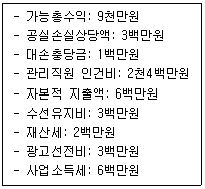
- 42,000,000원
- 48,000,000원
- 52,000,000원
- 54,000,000원
- 60,000,000원
(정답률: 알수없음)